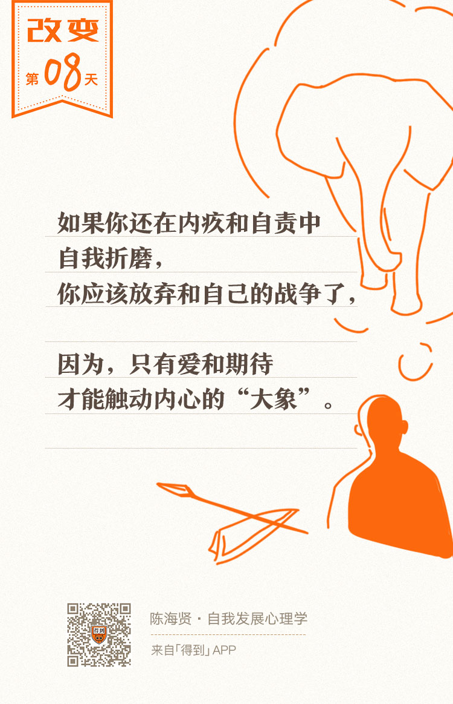

08丨情感触发原理：如何让改变自然发生？

欢迎来到《自我发展心理学》。
你好，我是陈海贤。
这节课，我们来讲引发行为改变的第四个原则——情感激发。
经常有人说：知道很多道理，却依然过不好这一生。
原因是，作为理智的骑象人和作为情感的大象，都有各自的主张。可大象的力量要大得多，这也是我们前面所讲的，大象的特点之一。
我们常说：让改变发生需要“动之以情，晓之以理”，这两个词的顺序是很有讲究的。你得先让大象有所触动，它才能听得进去道理。
在咨询室里，如果来访者跟我说：“道理我都懂。”那我就会想，坏了，这个咨询没起作用。
因为，当他说“道理我都懂”的时候，他其实是在说：“你说的道理我不想听。”他已经把道理放到了很远的，跟他无关的位置上了。
为什么？肯定是没有触动他的大象。
改变需要情感的触动。如果没有情感认同，就不会有改变的发生。
大象既容易被焦虑、恐惧这样的消极情感触动，也容易被爱、怜悯、同情、忠诚这样的积极情感触动。
可是，到底怎么才能激发我们内心深处的情感，并带来改变呢？
越自责，越放纵
人们习惯的方式，是用焦虑恐惧，也就是用恐吓的方式来促成改变。
原因是，焦虑和恐惧的力量最强大，最容易被激发和控制。比如：
- 在学校里，老师用批评来让学生听话；
- 在工作里，公司用末位淘汰制来让员工努力干活。
我们也总是习惯用自责的方式来给自己压力，觉得这样能促成进步和改变。
每次面临改变的时候，我们都会分裂成两个自我：一个上进、正义的自我，一个堕落、邪恶的自我。
上进的自我总是责备那个堕落的自我，而堕落的自我，经常会无地自容，觉得自己一无是处。焦虑和内疚就这么产生了。
我们本能地相信，内疚和自责能够帮助我们实现改变。就像小时候，我们淘气、偷懒，严厉的老师或者父母就会监督我们做作业。
成功学也是这么喊口号的：想成功吗？就要对自己狠一点。
你可能也会经常说：最好能把自己骂醒，如果不能改变，那一定是你骂得不够狠。
可是，内疚和自责能推动大象改变吗？当然不能。要不然我们也不会一边内疚自责，一边拖延着不愿意改变了。
原因在哪里呢？
原因在于：很多你想改变的应对方式，比如：吸烟、乱吃东西、拖延，就是为了应对焦虑和压力而产生的。
现在，内疚和自责增加了你的焦虑和压力，那你会用什么办法处理它们呢？当然还是吸烟、乱吃东西、拖延这些老方法了。
所以，越是自责，你就越容易放纵自己。这就陷入 “放纵——自责——更严重地放纵”的恶性循环。
有人说，为什么我越自责就越拖延了呢？就是这个道理。
曾有一个禁烟广告的实验。
广告上画的是两片黑黑的肺叶被香烟烧成了一个窟窿。这个广告非常恶心，大象一看就会被吓到。
可是，广告的效果却不如想象得那么好。为什么大象明明被触动了，却不起效呢？
原因很简单，很多时候，你吸烟是为了什么？就是为了减压。可是看到这种广告，你的压力会减轻吗？不会，相反，你变得更焦虑了。一焦虑，就来根烟压压惊吧。
用焦虑、恐惧、内疚的情绪来激励大象，大象只会焦虑烦躁地在原地打转。更何况，内疚和自责还会降低你的自尊，让你觉得自己懒惰、一事无成，进而破罐子破摔。
你要知道，那个你责备的自己，也正是那个要承担改变责任的自己。如果你都已经把自己骂得士气低落了，那你还哪里有勇气和力量去改变呢？
也许你要问：真的是这样吗？我看过周围有一些人对自己要求很高，有很高的效率，也取得了不错的成绩。他们难道不是把内疚和自责当做动力吗？如果内疚和自责没有用，那他们又是怎么维持对自己的高要求呢？
大象能听懂爱
我的心理咨询老师是一个非常严厉的老太太。无论从哪点来说，她都跟温柔善良扯不上关系。
第一年学咨询，她就一直在批评我：你这里说得不对，那里说得不对；你又没有思路；你只在看自己想看到的东西等等。
那段时间，我的士气很低落。这里既有对自己总也做不好的愧疚，也有对老太太不近人情的不满。
可是，这种愧疚并没有让我更努力地学习。相反，看到心理咨询的一堆学习材料，我还有些犯怵。虽然我一再责怪自己不够努力，大象却总也迈不开步伐。
一年的学习快要结束了。在课程的最后一天，老师给我们讲了她的老师——家庭治疗大师米纽庆的一些事。
她说：她年轻的时候，有一天拿着个案去找米纽庆督导。她做的是一个希腊家庭的来访者，人很多，过程也很乱，她好不容易控制住了场面，但也没有很出彩。
听她报告完个案，米纽庆就让其他学生提意见。
这些欧美的学生，纷纷说她做得好。其实他们是觉得，一个亚洲的小女孩，又有语言和文化差异，能做成这样已经不错了。
米纽庆没说话，静静地听完大家的意见，他开口了。他说：
听米纽庆这么一说，大家开始认真地思考，提了很多批评和建议。
老师说：“现在米纽庆已经去世了，我也老了。我要把他教我的东西告诉你们。你们来这里不是为了爽的。如果我只是表扬你们，那我其实也是在说，‘你们只能做到这种程度了。’我不停地批评你们，挑战你们，是相信你们完全能做得更好。”
那一瞬间，我心里的那只大象就被触动了，我理解了老师的用意。
从那天开始，我对自己的要求就提高了。这种自我要求并没有变成内疚和自责，更没有变成一种负担。相反，它的背后有一种“我能做得更好”的自豪感。
这种自豪感里，有老师对我的期待，也有我对老师的认同。在这种关系中，批评变成了一种信任和期待。
第二年，老太太还是那么严格，对我还是有很多的批评，但是我对批评的感觉却变了。严格的要求还是带来很大的压力，但它也变成了动力。
所以，问题不在于要不要对自己提高要求，而在这种高要求背后，你对自己究竟是厌恶，还是爱和期待。只有后一种感情，才是触动大象改变的力量。
我曾遇到过一位谴责自己的高手，我们叫她欧阳吧。欧阳的公司有很多优秀的同事，他们大都是从国内外名牌大学毕业的。
欧阳总是在跟同期进来的同事做比较，总是觉得同事很聪明，而自己很差。她经常会跟自己说：“不能再这么下去了！你要混到什么时候？别再堕落了！”
在我们咨询的很长一段时间里，她都处于“道理我都懂”的阶段。
我跟她说，人有很多面，不能这么简单地比较，甚至问她这种比较和自责对她有什么好处。这些都没有用。
欧阳的改变，同样来自情感触动。
那一天，我问起她是从哪里学来的这种对竞争的焦虑，她就回忆起了她的童年。
她是在机关大院里长大的。同龄的还有另外两个小女孩，都很漂亮乖巧，而她觉得自己长得一般。
这三个孩子的妈妈，经常会聚在一起讨论孩子。妈妈们是在暗暗较劲，而她的妈妈，又是一个好胜心很重的人。
每周六，她们三个人都会去一个地方，跟着一个老师学弹钢琴，三个妈妈则在旁边对她们品头论足。
有一天，她的琴没弹好，错了好几个音，妈妈非常生气。
以前，都是妈妈骑自行车接送她，那天天很冷，妈妈把她从自行车后座放下来，自己骑着自行车往前走，她就在后面一边哭，一边追。
说起这一段，她委屈地哭了。
她说：“从那以后，我就特别害怕去学钢琴。每次去那边，我都觉得，这三个妈妈就像三个将军在那边指挥坐镇。我们像是三个小兵，在前面战战兢兢地奋力杀敌。”
我问她：“现在你已经长大了。如果你是自己的妈妈，你会让自己参与这样的战争吗？”
她说：“我绝对不会。”
我说：“可是你现在就在让自己参加啊，只不过战场不一样了而已。”
她沉默了。
从那以后，每次遇到想跟同事比较的时候，她都会跟自己说：不要再参加这个愚蠢的战争了。
也许，她以前也这样劝过自己。但现在，说这话的时候，她心里的大象被触动了。
现在，她心里多了一样东西：对自己的爱和怜悯。她知道了自己为什么会有这么多自我谴责，也知道这并不是她想要的自我谴责。这是她妈妈的需要，不是她的需要。
而这种理解，是驱动大象改变最重要的部分。
所以，你对自己还好吗？想起自己的时候，你是带着厌恶和憎恨，还是带着爱、同情和期待呢？
如果你还在内疚和自责中自我折磨，也许，你就应该放弃和自己之间的战争了。就像一个士兵终究要解甲归田一样。
大象也许听不懂你说的道理，但它能听懂爱。
它会很清楚地知道，你爱不爱它。只有爱，才会让它心甘情愿，为你上路。
我们下节课见。
